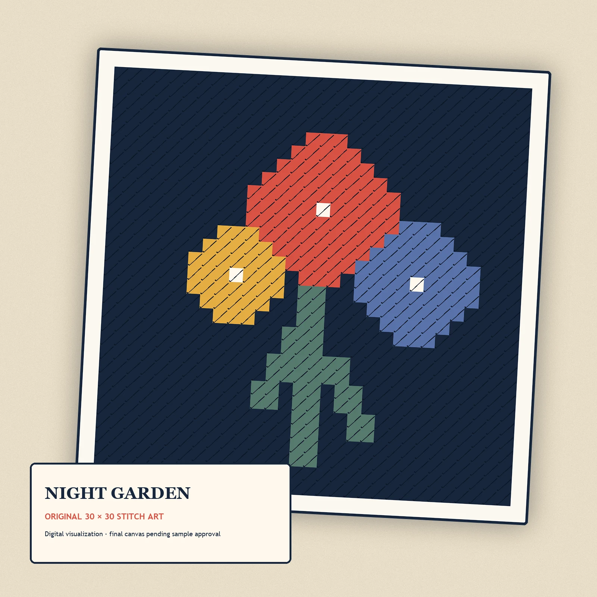

Founding design
Night Garden First Stitch Mini
A calm botanical mini designed to turn your first stitch into a finished piece.
$39.00 USD
Pre-launch preview. This product is not for sale until its sample, material, cost, safety, and ship-date gates pass.
Join the founding dropFinished sizeApprox. 3.5–4 in
MeshPlanned 10–13 mesh
ThreadPlanned cotton or wool; pre-sorted
Colors6
ExperienceNone
Completion timePublished only after novice test
FinishingSelf-finishing format
SafetyAdult use; contains a blunt needle
Start needlepoint without starting a supply collection. Night Garden is a compact, original mini project built around one beginner stitch and a clear color path.
The planned complete kit includes a printed 10–13 mesh canvas, pre-sorted thread with learning-room overage, a blunt tapestry needle, a threader, a quick-start card, and original video help. The small format is designed to become a self-finished ornament, patch, tag, or mini display—without sending it to a professional finisher.
- Skill level: true beginner
- Prior experience: none planned
- Finished design: approximately 3.5–4 in
- Colors: 6
- Core technique: one diagonal tent stitch
- Age positioning: adult craft kit; contains a needle
Pre-launch note: this listing is in draft until physical sample, thread quantity, print alignment, completion time, and ship date are verified.